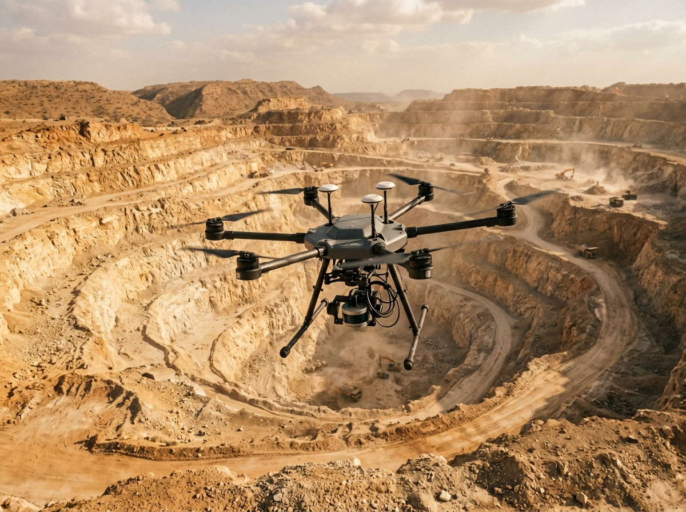
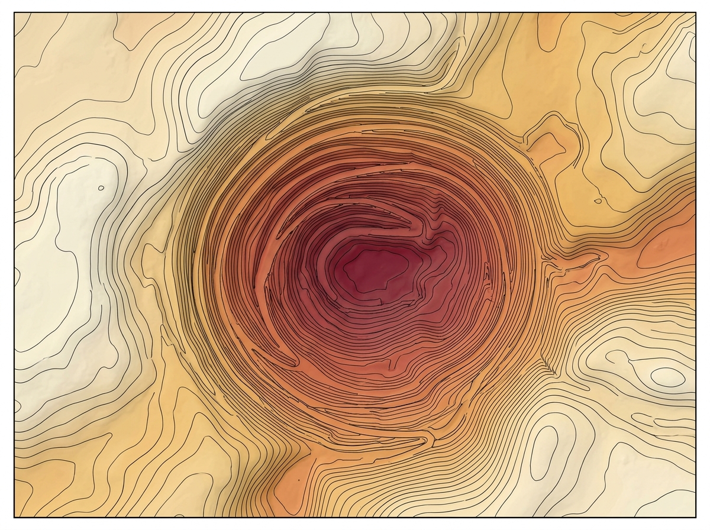
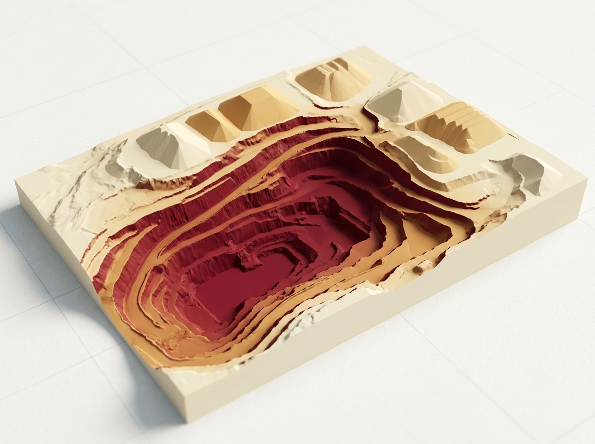

From flyover to
finished report.
Replacing slow, hazardous ground surveys with autonomous aerial data collection. We deliver tender-compliant topographic models, volumetric cut/fill audits, and operational intelligence for mining operators and government evaluators.
Tender-Grade Aerial Intelligence
Engineered for high-volume earthworks, quarry management, and institutional procurement compliance.
Aerial Photogrammetry & LiDAR
Full-site terrain capture in a single flight. Multi-sensor payloads capture dense point clouds and digital surface models across extensive acreage without ground disruption.
Volumetric Stockpile & Excavation
High-precision cut/fill and material-volume reporting. Eliminates visual estimations with verifiable 3D mesh volume accounting.
Topographic Survey for Tenders
Deliverables formatted directly to government specifications. Regulatory contour maps ready for submission.
Progress & Compliance Auditing
Repeat temporal flights establishing verifiable audit trails. Monitor bench stability, environmental setback buffers, and boundary encroachment over time.
From Raw Flight Data to Tender Sign-Off

Rapid Full-Site Aerial Capture
Replaces days of hazardous on-foot ground surveying with a single automated aerial sortie. Pre-programmed autonomous flight paths systematically survey open-pit quarries, steep rock faces, and vast stockpile reserves without halting active hauling operations or exposing field crew to unstable slopes.

Structured Topographic Modeling
Raw aerial imagery and high-density point clouds are processed into geo-referenced Digital Surface Models (DSM) and Digital Terrain Models (DTM). Clean elevation isolines are extracted to produce tender-grade cartographic vector files ready for direct import into AutoCAD, GIS, and mine planning suites.

Volumetric Stockpile & Cut/Fill Auditing
Computes cut-and-fill differentials and stockpile tonnage directly against baseline surveys or design grades. Eliminates speculative estimations with verifiable 3D mesh volume accounting, providing mining leaseholders, contractors, and auditors with defensible material records.
Tender-Ready, Compliance Deliverables
Every aerial survey culminates in formatted, sign-off ready documentation engineered specifically for government tender submissions, lease renewals, and regulatory filings. Deliverables include signed boundary certifications, PDF summary audits, and raw CAD layers that pass procurement scrutiny on first review.
See a Flyover-to-Deliverable Walkthrough
Watch how our aerial survey drones capture multi-hectare mine sites and systematically produce tender-ready volumetric audits and contour layouts.
Interactive demonstration: 3D point cloud generation, terrain contour extraction, and volumetric cut/fill reporting.
Why Jirawla for Surveying
Replacing fragmented legacy methods with an integrated aerospace-grade delivery model.
Faster Than Ground Survey
Full-site coverage in a fraction of manual survey time. What previously required weeks on rugged terrain is surveyed in a single morning.
Tender-Ready Output
Deliverables formatted strictly for government and institutional procurement requirements, eliminating costly compliance revisions.
Field-Validated
Built from direct site work across active mining operations and complex open-pit topography, not theoretical desk-only modeling.
Direct Engagement
Direct collaboration with our flight ops and geospatial engineering team — no reseller layers, third-party markups, or delayed data handoffs.
This work sits within Jirawla's broader government and institutional engagement framework.
Have a site that needs surveying?
Turn complex terrain into actionable, tender-ready engineering models. Schedule an initial site evaluation or discuss your upcoming procurement specifications with our geospatial flight operations team.